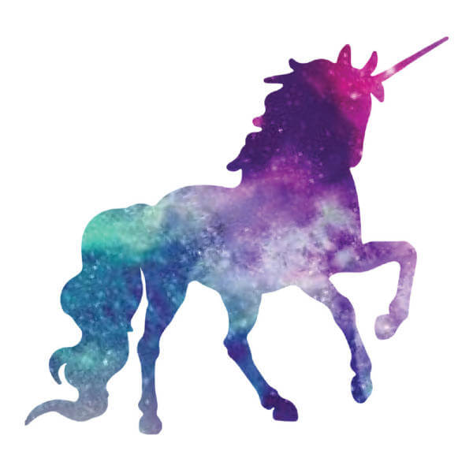

About Unicorns
The unicorn is a legendary creature that has been described since antiquity as a beast with a single large, pointed, spiraling horn projecting from its forehead.
Popularity
The Unicorn Trend is a tendency to design and consume objects, clothing and food with a rainbowed and vibrant color palette, usually composed by pastel or highly saturated colors such as pink, violet, blue and green.
Here is a photo of a cute unicorn!
The information on this page is credited to Wikipedia.